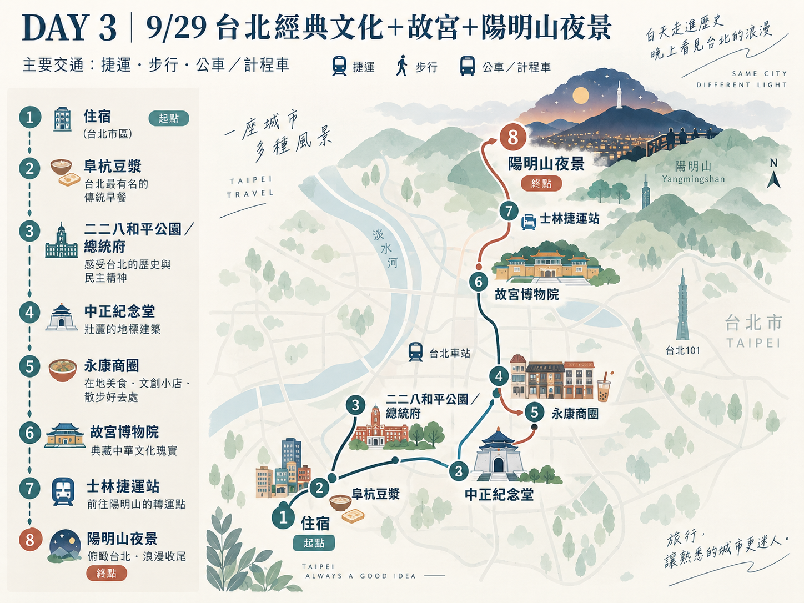
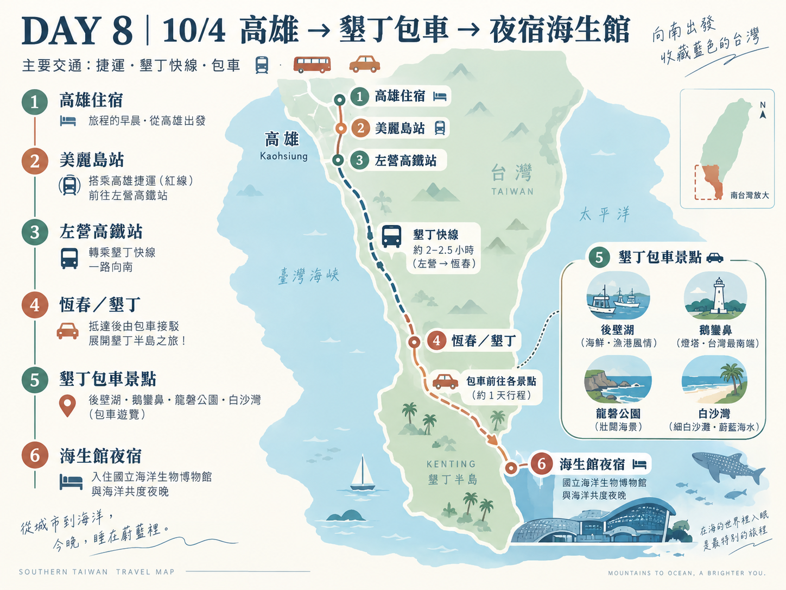
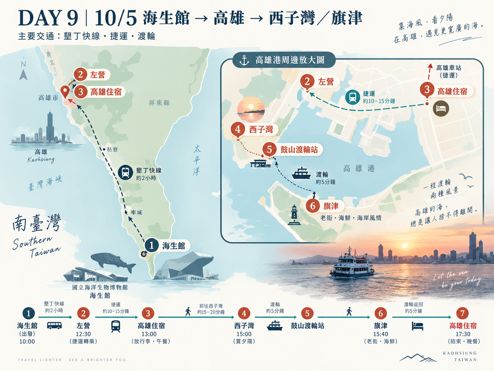

🗺️ 邵奶奶台灣山海縱走・分區地圖
點擊下方台灣各區域卡片，即可在該卡片下方彈出對應的天數與行程選單！
北台灣：台北都會與北海岸
桃園機場抵達、台北夜生活、北海岸（野柳/九份/十分）、故宮與陽明山漫遊。
🏙️ 北台灣行程（Day 1 - Day 3）
中台灣：日月潭與高山武嶺
南投日月潭湖畔風光、九族文化村、高美濕地、挑戰台灣公路之巔「武嶺」後直奔台南。
⛰️ 中台灣行程（Day 4 - Day 6）
南台灣：府城古都、墾丁與高雄
台南古蹟美食、月世界熱氣球、墾丁海岸包車、夜宿海生館、高雄旗津夕陽與賦歸。
🏝️ 南台灣行程（Day 7 - Day 10）
東台灣：花東縱谷與海岸線
本次行程以西部山海縱走為主，東部美景可作為未來再度造訪台灣的精采延伸！
第一天：抵達台灣與台北夜生活
🗺️ 【今日小地圖】 收合 ▲

桃園國際機場 ➔ 台北住宿 ➔ 中山／圓山／西門町／信義區・台北101
※依抵達後精神狀況選1～2個區域
🕒 今日時間軸
📍 景點介紹／推薦理由
⚠️ 【今日特殊備註】 展開 ▼
・第一天不安排高強度景點。
・中山、圓山、西門町、信義區四選一～二即可。
・若行李較多或多人同行，計程車方便程度比機捷高；若住中山站，機捷至A1後轉計程車最省力。
第二天：北海岸・九份・十分一日遊
🗺️ 【今日小地圖】 收合 ▲

台北 ➔ 野柳 ➔ 陰陽海 ➔ 黃金瀑布 ➔ 九份 ➔ 十分 ➔ 台北
※實際順序與停留時間依Klook當日安排為準。
🕒 今日時間軸
📍 景點介紹／推薦理由
🗺️ Google Map 單一景點／地址快速查詢
⚠️ 【今日特殊備註】 展開 ▼
・2026/9/28為教師節國定假日，九份與十分人潮可能增加，可考慮與9/29互換。
必吃推薦：九份芋圓、草仔粿。
第三天：台北經典文化與百萬夜景
🗺️ 【今日小地圖】 收合 ▲

住宿 ➔ 阜杭豆漿 ➔ 二二八公園 ➔ 總統府外圍 ➔ 中正紀念堂 ➔ 永康商圈 ➔ 故宮 ➔ 士林捷運站集合 ➔ 陽明山夜景
🕒 今日時間軸
📍 景點介紹／推薦理由
🗺️ Google Map 單一景點／地址快速查詢
⚠️ 【今日特殊備註】 展開 ▼
1. 阜杭豆漿很有名，要預留排隊時間
2. 故宮外籍成人普通票NT$350；國籍優惠折抵票NT$150。
3. 永康商圈推薦：搖滾牛冰淇淋、鼎泰豐、白水豆花、芒果冰。
第四天：手作糕點與日月潭湖景
🗺️ 【今日小地圖】 收合 ▲

台北住宿 ➔ Cookinn ➔ 台北車站 ➔ 高鐵台中站 ➔ 日月潭／水社 ➔ 遊湖船 ➔ 伊達邵 ➔ 日月潭湖景住宿
🕒 今日時間軸
📍 景點介紹／推薦理由
🗺️ Google Map 單一景點／地址快速查詢
⚠️ 【今日特殊備註】 展開 ▼
・抵達日月潭後自由行，晚上飯店會合
必吃推薦：阿薩姆紅茶、茶葉蛋、山豬肉、小米麻糬、飯飯雞翅
第五天：九族文化村與春水堂珍奶
🗺️ 【今日小地圖】 收合 ▲

日月潭住宿 ➔ 日月潭纜車站 ➔ 九族文化村 ➔ 日月潭 ➔ 住宿取行李 ➔ 日月潭站 (14:40-16:20) ➔ 台中干城 ➔ 轉自駕 ➔ 高美濕地 ➔ 春水堂 (19:00) ➔ 台中住宿
🕒 今日時間軸
📍 景點介紹／推薦理由
⚠️ 【今日特殊備註】 展開 ▼
・高美濕地日落時間：約 18:15（10/1當日）
・春水堂必吃：功夫麵、珍奶、奶酥吐司
第六天：武嶺高山曙光與台南美食之都
🗺️ 【今日小地圖】 收合 ▲

台中住宿 ➔ 武嶺／合歡山 ➔ 台中住宿補眠 ➔ 台南麻豆 ➔ 龍泉冰店 ➔ 鹿耳門天后宮、聖母廟 ➔ 漁光島 ➔ 台南市區住宿
🕒 今日時間軸
📍 景點介紹／推薦理由
🗺️ Google Map 單一景點／地址快速查詢
✨ 【今日亮點】 展開 ▼
想見你！莫奶奶冰店 🍧
⚠️ 【今日特殊備註】 展開 ▼
・武嶺日出時間：約 05:47 - 06:01
・高山氣溫極低，請務必準備好外套保暖
台南必吃推薦：牛肉湯、鼎富發、棺材板、鱔魚意麵
第七天：台南綠色隧道與高雄熱氣球
🗺️ 【今日小地圖】 收合 ▲

台南住宿 ➔ 四草綠色隧道 ➔ 安平區 ➔ 東來理髮廳 ➔ 性格咖啡 ➔ 愛・月熱氣球節 ➔ 高雄美麗島住宿
🕒 今日時間軸
📍 景點介紹／推薦理由
🗺️ Google Map 單一景點／地址快速查詢
✨ 【今日亮點】 展開 ▼
・台式洗髮鬆一下 💆♀️
・咖啡店客製拉花 ☕️
⚠️ 【今日特殊備註】 展開 ▼
・四草綠色隧道票價：全票 NT$200 / 兒童票 NT$100。
・熱氣球最晚 17:30 要報到，採現場排隊制。
台南必吃推薦：周氏蝦捲、雙生綠豆沙、安平豆花、王氏魚皮
第八天：墾丁海岸包車與夜宿海生館
🗺️ 【今日小地圖】 收合 ▲

高雄住宿 ➔ 美麗島站 ➔ 高鐵左營站 ➔ 墾丁快線 ➔ 恆春／墾丁 ➔ 包車遊墾丁 ➔ 國立海洋生物博物館
🕒 今日時間軸
📍 景點介紹／推薦理由
✨ 【今日亮點】 展開 ▼
夜宿海生館（與海洋生物共眠的兩天一夜深度體驗）。
⚠️ 【今日特殊備註】 展開 ▼
⚠️ 海生館 16:00 報到是固定死線：包車景點寧願少一個（選3-4個點），絕不準壓線遲到！
第九天：港都夕陽與旗津渡輪
🗺️ 【今日小地圖】 收合 ▲

海生館 ➔ 海生館轉乘站 ➔ 墾丁快線 ➔ 左營站 ➔ 高雄住宿取行李／再次入住 ➔ 西子灣 ➔ 鼓山渡輪站 ➔ 旗津 ➔ 旗后砲台／燈塔 ➔ 高雄住宿
🕒 今日時間軸
📍 景點介紹／推薦理由
🗺️ Google Map 單一景點／地址快速查詢
✨ 【今日亮點】 展開 ▼
西子灣與高雄港夕陽 ＆ 旗鼓渡輪港都體驗。
⚠️ 【今日特殊備註】 展開 ▼
・海生館11:31班次非常緊，推薦搭12:01班次較保守。
・高雄日落約17:43-17:47，建議17:15前抵達觀景位置。
第十天：賦歸香港・完美收尾
🗺️ 【今日小地圖】 收合 ▲

高雄住宿 ➔ 美麗島站 ➔ 高雄捷運紅線・往小港 ➔ 高雄國際機場站 ➔ 高雄國際機場 ➔ 香港
🕒 今日時間軸
🗺️ Google Map 單一景點／地址快速查詢
✨ 【今日亮點】 展開 ▼
無正式景點，以輕鬆準時搭機、平安返回香港為完美收尾。
⚠️ 【今日特殊備註】 展開 ▼
・住宿選美麗島附近的主要優點：最後一天不需轉線，直達機場。
・07:30 抵達機場可預留約 2 小時 45 分鐘，從容不迫。
全程重要提醒與應變指南
🍜 邵奶奶專屬・滿滿台灣在地美食清單
點擊方框即可打勾記錄，狀態會自動儲存，重新整理也不會消失！
💰 旅遊預算、換匯與隨手記帳
💱 人民幣 ⇄ 台幣即時換匯計算機
📊 10日行程預估花費統整表 (TWD)
| 項目分類 | 內容說明 | 預估金額 (NT$) |
|---|---|---|
| 機票費用 | 香港 ⇄ 台北／高雄 來回機票 | 約 $2,500 - $4,000 |
| 住宿總計 | 台北、日月潭、台中、台南、高雄與夜宿海生館 | 約 $18,000 - $25,000 |
| 交通票券 | 高鐵、台灣好行、墾丁快線、捷運、渡輪 | 約 $3,500 - $5,000 |
| 一日遊與門票 | Klook北海岸一日遊、九族、故宮、熱氣球等 | 約 $4,500 - $6,500 |
| 餐飲與伴手禮 | 在地美食、牛肉湯、春水堂、夜市與伴手禮 | 約 $8,000 - $12,000 |
✍️ 隨手記帳本（自動儲存）
🚨 交通班次與急救包總覽
🚆 高鐵轉乘日月潭
台北搭高鐵至台中 (~1小時) ➔ 轉台灣好行 6670 日月潭線 (~1.5小時)。
🚐 墾丁快線 (9189)
左營高鐵站 2 號出口售票處登記車次，至第 2 月台搭乘直達恆春/墾丁。
🚢 旗鼓渡輪 (鼓山 ➔ 旗津)
全票 NT$30，可直接刷悠遊卡/一卡通，每 5-15 分鐘一班。
✈️ 最終日機場直達
高雄美麗島站搭乘捷運紅線往小港方向，直達高雄國際機場站（約 15-20 分）。